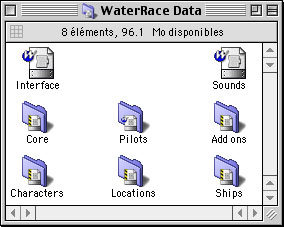

WaterRace architecture and editing tools
WaterRace has a great flexible and opened architecture:
Features currently available to the public:
• edit and modify the ships included with the game: replace textures with your owns, change the physic parameters, etc...
• add custom ships (i.e. complete new ships) and use them in the game,
• edit and modify the levels included with the game: replace textures, add models, cameras, redesign the tracks, etc...
• add custom levels (i.e. complete new levels) and use them in the game
Private features (we might make them available to the public later through development kits)
• plug-in drivers system: add custom ship drivers, custom camera drivers to the game
• plug-in game modes system: add easily custom game modes to the game
WaterRace is provided for free with the creation tools used by the makers of the game. Our goal is to create a community of WaterRace fans who create add-ons, exchange them, etc...
OK, I know what you think: many developers have been doing that for a few years. Well, we've changed the rules: editing tools have always been incredibly complex to use and always had aweful user interface (almost a DOS interface), because editing tools have always been designed for internal use by experienced developers and designers, not end users! With WaterRace editing tools, we did it the other way round: although they spot some complex features, these are really the most easy and powerful at the same time editing tools available on any computer. And they have a typical nice, clear and simple Mac user interface.
Any user will be able to play with them: non-experienced users can simply modify existing levels and ships while power users will create their own levels from the ground.
There's an obvious lack of editing tools on the Mac, so with WaterRace you have a unique chance to discover game levels creation!
|